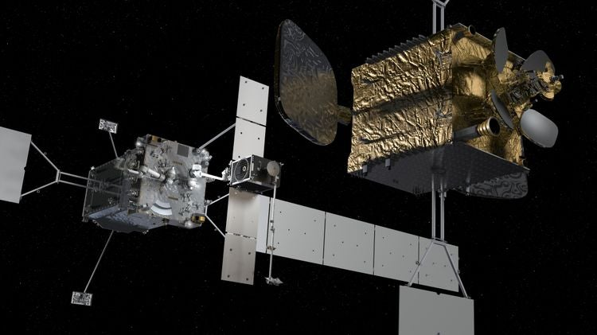
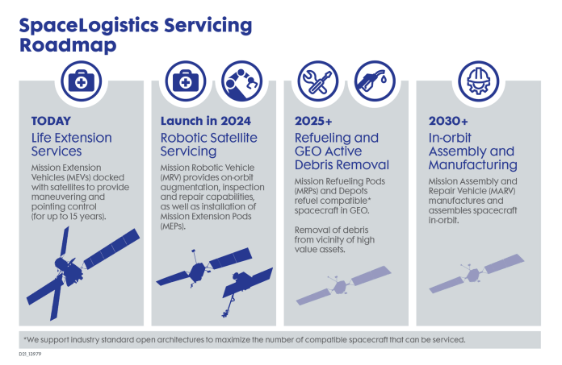

Northrop Grumman (NOC)
Northrop Grumman to globalny prime aerospace & defense - twórca systemów lotniczych, obronnych, misyjnych i kosmicznych, z 41,0 mld USD sprzedaży w FY2024 (🔵 10-K 2024, 31.12.2024) i 87% przychodów płynących od rządu USA (🔵 10-K 2024). W kontekście orbitalnych centrów danych spółka nie jest dostawcą "data center w przestrzeni", lecz właścicielem niemal całego łańcucha sprzętowego, który taki obiekt musiałby wykorzystać: busów satelitarnych, rozkładanych skrzydeł fotowoltaicznych, radiatorów oraz - co najważniejsze - jedynego operacyjnego komercyjnego serwisu satelitów w GEO. Wszystkie te kompetencje mieszczą się w segmencie Space Systems, który w FY2024 odpowiadał za 11,7 mld USD, czyli 28,6% całości, przy marży operacyjnej 10,7% (🔵 10-K 2024). Omawiane tu nisze (busy, PV, chłodzenie, serwisowanie) to jednak tylko ułamek tego segmentu - spółka nie ujawnia ich osobno (NIE UJAWNIONE).
W kontekscie: Fizyka orbitalna, orbity i operacje
Fundamentem ekspozycji NOC są busy satelitarne odziedziczone po Orbital ATK: rodziny LEOStar-2/3, GEOStar-1/2/3 oraz ESPAStar i ESPAStar-HP (🔵 10-K 2024). To one dostarczają funkcji, których orbitalne centrum danych nie może obejść - struktury nośnej, napędu do utrzymania orbity oraz precyzyjnej kontroli położenia (ADCS): kół reakcyjnych, star trackerów i jednostek IMU. ESPAStar-HP osiąga celowanie poniżej 50 µrad (🔵 10-K 2024 / materiały produktowe), co plasuje go w klasie platform zdolnych do formation flying i precyzyjnego utrzymania szyku - tematu rozwijanego w Formation flying / utrzymanie szyku konstelacji. Heritage NOC pokrywa zarówno LEO (gdzie liczą się opór atmosferyczny i station-keeping, por. Opór atmosferyczny (drag), station-keeping, napęd i paliwo), jak i GEO, gdzie skupia się model serwisowania omawiany niżej; wybór reżimu orbitalnego to klasyczny trade-off opisany w Trade-off orbit: LEO vs SSO dawn-dusk vs MEO vs GEO.
Dla inwestora: kompetencje busowe NOC to dojrzała, sprawdzona w locie baza, ale są one rozproszone w wielu programach rządowych - nie tworzą wydzielonej, mierzalnej linii "orbital data center".
Materiały spółki
Grafiki z materiałów spółki / IR (prawa właściciela, użycie redakcyjne). Pełny rejestr:
Spolki/assets/_licencje.json.

1. MRV z MEP (robotyczna instalacja Mission Extension Pod) - JPG, Satellite Today / SpaceLogistics. Źródło: www.satellitetoday.com; licencja: materiały spółki / IR - prawa właściciela, użycie redakcyjne.

2. MRV z ramionami robotycznymi NRL (Northrop Grumman Robotic Vehicle) - JPG, SatellitePro ME. Źródło: satelliteprome.com; licencja: materiały spółki / IR - prawa właściciela, użycie redakcyjne.

3. Infografika SpaceLogistics (MEV → MRV → MEP, roadmap ISAM) - PNG, New Space Economy. Źródło: i0.wp.com; licencja: materiały spółki / IR - prawa właściciela, użycie redakcyjne.
W kontekscie: Energetyka kosmiczna i fotowoltaika orbitalna
Zasilanie to drugi filar. NOC dostarcza rozkładane skrzydła słoneczne UltraFlex / MegaFlex oraz Next Generation UltraFlex (NGU), o specyficznej mocy ponad 175-220 W/kg, skalowalności powyżej 7 kW na skrzydło i napięciu szyny powyżej 100 VDC (🔵 NASA ST8/NGU; materiały produktowe NOC). Wysoka gęstość mocy na kilogram jest kluczowa dla orbitalnego centrum danych, bo to ona decyduje o budżecie masowym wynoszenia - wątek rozwinięty w Gęstość masowa: W/kg, masa/m2 i przeliczenie "200 MW". Przewaga ogniw kosmicznych nad krzemem naziemnym oraz dobór architektury skrzydła to materiał z Sprawność ogniw kosmicznych vs krzem naziemny, a wysokonapięciowe szyny i bilans mocy na zaćmienia - z Bilans mocy, magazynowanie na zaćmienia i busy wysokonapięciowe. Skala produkcji NOC w obszarze ogniw przekracza 60 tys. ogniw rocznie (🔵 materiały produktowe NOC), co świadczy o wertykalnej integracji łańcucha PV - od ogniwa po gotowe skrzydło.
Dla inwestora: zdolność wytwórcza ogniw i rozkładanych skrzydeł jest realną barierą wejścia, lecz przychody z niej są zaszyte w kontraktach platformowych i nieujawniane osobno (NIE UJAWNIONE).
W kontekscie: Chłodzenie i radiacyjne odprowadzanie ciepła
W próżni jedyną drogą oddania ciepła jest promieniowanie, dlatego radiator staje się elementem krytycznym każdego energochłonnego ładunku - mechanizm opisany w Mechanizm: dlaczego w próżni liczy się tylko promieniowanie. NOC produkuje własne radiatory na pętlach cieplnych (loop heat pipe radiators), m.in. dla statku Cygnus i ISS, oraz stosuje pasywną i aktywną kontrolę termiczną na swoich busach (🔵 10-K 2024; materiały produktowe NOC). To dziedzictwo ISS - pętle odprowadzające ciepło w skali kilowatów - jest punktem wyjścia do skalowania do większych mocy, co rozwija Dziedzictwo ISS: pętle amoniakalne w skali kilowatów, skalowane do MW oraz Technologie: heat pipes, pętle, układy dwufazowe i radiatory rozkładane. Dla porównania skali: rozkładane radiatory programu Gateway projektowane są do odprowadzania ponad 90 kW (🟠 materiały programowe), co pokazuje rząd wielkości, jakiego wymagałoby gigawatowe centrum danych.
Dla inwestora: chłodzenie jest wąskim gardłem orbitalnych centrów danych, a NOC ma sprawdzone w locie radiatory - lecz to komponent, nie samodzielna linia przychodowa.
W kontekscie: Niezawodność, serwisowanie i cykl życia sprzętu
To najsilniejsza i najbardziej unikalna przewaga spółki. Sprzęt na orbicie jest zasadniczo nieserwisowalny - nie ma hot-swap, a cykl odświeżania GPU na Ziemi (3-5 lat) zderza się z wieloletnią, "zamrożoną" platformą orbitalną. Problem ten i jego ekonomiczne konsekwencje opisuje Cykl odświeżania GPU (~3-5 lat na Ziemi) a nieserwisowalna orbita ("frozen hardware"). Jedyną dziś działającą odpowiedzią rynkową jest robotyczna obsługa, której NOC jest pionierem przez spółkę SpaceLogistics (100% NOC): Mission Extension Vehicle MEV-1 zadokował do Intelsat 901 w lutym 2020 - pierwszy komercyjny docking w GEO - a MEV-2 do Intelsat 10-02 w kwietniu 2021 (🔵 press releases NG; SpaceLogistics/UNOOSA). NOC jest jedynym dostawcą serwisu life-extension sprawdzonego w locie, co wprost rozwija Brak napraw in-situ a robotyczna obsługa (Northrop Grumman MEV i następcy). Kolejny krok to Mission Robotic Vehicle (MRV) z ramionami DARPA/NRL, planowany na 2026 jako pierwszy komercyjny robotyczny serwis satelitarny, oraz Mission Extension Pods (MEP). Dla centrum danych oznaczałoby to możliwość przedłużania życia i częściowego modernizowania platformy zamiast deorbitacji całych modułów - dylemat z Deorbitacja i wymiana całych modułów a upgrade.
Dla inwestora: flight-proven serwis GEO to realnie obronna, jednoosobowa pozycja NOC, ale przychody z in-orbit servicing szacowane na ponad 180 mln USD rocznie w 2025 (🟠 ResearchIntelo) to ok. 1,5% Space Systems i ok. 0,4% całej spółki - czyli nisza, nie rdzeń.
Pozycja rynkowa
Northrop Grumman jest liderem zintegrowanych systemów kosmicznych dla rządu USA i jednym z czołowych graczy raportowanego rynku orbitalnych centrów danych, opierając pozycję na heritage AEHF/GEO, ładunkach classified i busach satelitarnych (🟠 Dataintelo Orbital Data Center Market Report; SpaceNews). Segment Space Systems wniósł 11,7 mld USD przy 28,6% udziału w sprzedaży FY2024 (🔵 10-K 2024), ale omawiane nisze to jedynie jego ułamek; jedyny ujawniony szacunek dotyczy serwisu in-orbit (ponad 180 mln USD rocznie, 🟠 ResearchIntelo).
Główni konkurenci różnią się w zależności od osi. W busach i platformach kosmicznych są to Lockheed Martin (m.in. LM 400), Boeing, RTX/Blue Canyon, L3Harris, Thales oraz Airbus Defence and Space. W kluczowym dla NOC obszarze serwisowania on-orbit najpoważniejsi rywale to Astroscale (program ELSA) oraz MDA, a w infrastrukturze paliwowej Orbit Fab; w nowej fali komercyjnych centrów obliczeniowych pojawiają się Starcloud (dawny Lumen Orbit) i SpaceX/Starship (🟠 SpaceNews; eoPortal; Payload Space). Przewaga NOC nad Astroscale, MDA czy Airbusem polega dziś na tym, że tylko ona ma serwis GEO udokumentowany realnymi dokowaniami (MEV-1, MEV-2), podczas gdy konkurenci są na etapie demonstracji lub planów.
Ryzyka
Pierwszym ryzykiem jest koncentracja klienta rządowego i cykl budżetowy: 87% sprzedaży trafia do rządu USA (🔵 10-K 2024), więc opóźnienia kontraktów (continuing resolution) i wygaszanie programów bezpośrednio uderzają w przychody. W Q1/2025 segment Space Systems spadł o 18% r/r do 2,57 mld USD wskutek wind-downu dwóch programów (ok. 230 mln USD headwindu r/r), a cała spółka zanotowała sprzedaż 9,47 mld USD, o 7% mniej r/r (🔵 Q1/2025 earnings call, 22.04.2025).
Drugie ryzyko to przenoszenie się presji programowej na cały koncern: charge 477 mln USD na program B-21 w Q1/2025 obniżył segmentową marżę operacyjną do 6% (🔵 Q1/2025 earnings call). Dywersyfikacja kosmiczna nie izoluje NOC od problemów w Aeronautics Systems - słabość jednego programu obciąża skonsolidowany wynik.
Trzecie to konkurencja "nowej fali" orbitalnych centrów danych: SpaceX/Starship i startupy jak Starcloud planują gigawatowe klastry obliczeniowe w przestrzeni (🟠 DC Market Insights; Payload Space). Mogą one zmienić ekonomikę mocy i chłodzenia w LEO i wymusić na NOC szybsze przejście od tradycyjnych busów do komercyjnych platform space-compute - mechanizm: jeśli rynek przesunie się ku tanim, masowo produkowanym platformom obliczeniowym, dotychczasowa przewaga heritage NOC może stracić na znaczeniu.
Czwarte ryzyko to zależność modelu serwisowego od rynku GEO: MEV/MRV/MEP są optymalizowane pod GEO (🟠 Payload Space), więc spadek liczby nowych satelitów GEO albo dojrzewanie konkurencji robotycznej i depotowej (Astroscale, MDA, Orbit Fab) mogłyby ograniczyć skalowalność tej najbardziej unikalnej linii.
Powiązane spółki
Inne notowane spółki z raportu dzielące z tą firmą co najmniej jeden wątek tematyczny (wspólny rynek, technologia lub łańcuch wartości).
- Airbus SE (AIR) - PV (Sparkwing), optyka (Tesat), busy, serwis (EU)
Wspólne wątki: Fizyka orbitalna; Energetyka kosmiczna; Chłodzenie; Niezawodność i serwisowanie. - Redwire Corporation (RDW) - Panele ROSA, struktury rozkładane, montaż on-orbit, radiatory Q-Rad
Wspólne wątki: Fizyka orbitalna; Energetyka kosmiczna; Chłodzenie; Niezawodność i serwisowanie. - Rocket Lab Corporation (RKLB) - Launch (Electron/Neutron) + Space Systems: bus, ogniwa SolAero, komponenty
Wspólne wątki: Fizyka orbitalna; Energetyka kosmiczna; Niezawodność i serwisowanie. - Lockheed Martin Corporation (LMT) - Busy satelitarne, serwisowanie, ULA (launch)
Wspólne wątki: Fizyka orbitalna; Niezawodność i serwisowanie. - MDA Space Ltd. (MDA) - Robotyka kosmiczna (Canadarm), busy, anteny
Wspólne wątki: Fizyka orbitalna; Niezawodność i serwisowanie. - RTX Corporation (RTX) - ADCS (Blue Canyon), termika (Collins Aerospace)
Wspólne wątki: Fizyka orbitalna; Chłodzenie. - Voyager Technologies, Inc. (VOYG) - Stacje kosmiczne (Starlab), systemy kosmiczne i obronne
Wspólne wątki: Fizyka orbitalna; Niezawodność i serwisowanie. - Astroscale Holdings Inc. (186A) - Pure-play serwisowanie i usuwanie śmieci (ADR)
Wspólne wątki: Niezawodność i serwisowanie. - Eaton Corporation plc (ETN) - Zasilanie DC (UPS, switchgear) + chłodzenie (Boyd Thermal)
Wspólne wątki: Chłodzenie. - Vertiv Holdings Co (VRT) - Zasilanie i precyzyjne/cieczowe chłodzenie DC
Wspólne wątki: Chłodzenie.
Zrodla
- 🔵 Northrop Grumman 10-K 2024 (CapEdge) - sprzedaż, segmenty, backlog, koncentracja klienta, portfel busów/PV/chłodzenia.
- 🔵 Q1/2025 earnings call transcript (Investing.com / Yahoo Finance, 22.04.2025) - sprzedaż Q1/2025, spadek Space Systems, charge B-21.
- 🔵 Northrop Grumman press releases NG-20/NG-21; SpaceLogistics / UNOOSA presentation - MEV-1, MEV-2, MRV, MEP.
- 🔵 NASA ST8/NGU; materiały produktowe NOC - UltraFlex/MegaFlex/NGU, loop heat pipe radiators, ogniwa.
- 🟠 ResearchIntelo In-Orbit Satellite Servicing Report - szacunek przychodów z serwisu in-orbit.
- 🟠 Dataintelo Orbital Data Center Market Report; DC Market Insights; SpaceNews; eoPortal; Payload Space (MRV) - pozycja rynkowa, konkurencja, nowa fala.
Linkują tutaj
16 powiązanych notatek
- Mapa raportu Orbitalne / kosmiczne centra danych
- Sekcja Fizyka orbitalna, orbity i operacje
- Sekcja Energetyka kosmiczna i fotowoltaika orbitalna
- Sekcja Chłodzenie i radiacyjne odprowadzanie ciepła
- Sekcja Niezawodność, serwisowanie i cykl życia sprzętu
- Sekcja Bezpieczeństwo, geopolityka i realizm 10-letni
- Spółka Airbus (AIR)
- Spółka Astroscale (186A)
- Spółka Eaton (ETN)
- Spółka Lockheed Martin (LMT)
- Spółka MDA Space (MDA)
- Spółka Redwire (RDW)
- Spółka Rocket Lab (RKLB)
- Spółka RTX (RTX)
- Spółka Vertiv (VRT)
- Spółka Voyager Technologies (VOYG)